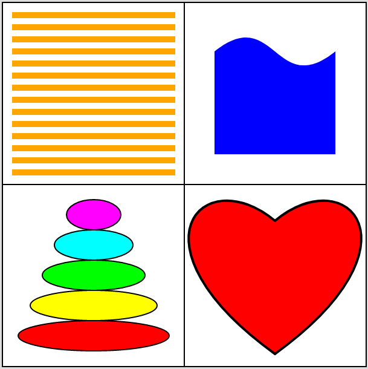
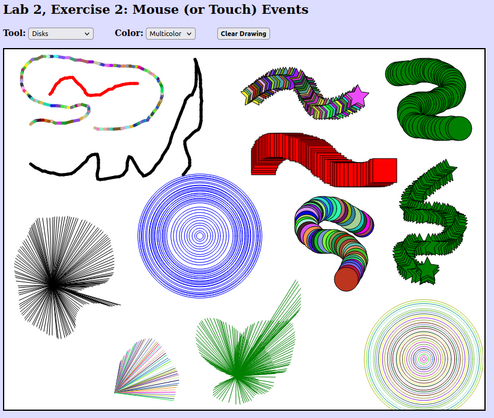
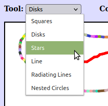

CS 424: Computer Graphics, Fall 2021
Lab 2: 2D Graphics with HTML Canvas
This lab consists of two exercises on drawing with the HTML canvas 2D graphics API, which is covered in Section 2.6. It requires some knowledge of JavaScript, which was covered briefly in Section A.3.
You will need copies of the following files, which you can find in /classes/cs424/lab2-files or download from the Web: Lab2Ex1.html and Lab2Ex2.html. You can edit these files with any text editor, or with Komodo Edit.
Turning in your work: Your programs must be submitted by the beginning of the lab period next Thursday. They must be in a folder named lab2 or lab2-files inside your homework folder in /classes/cs424/homework.
For this lab, you should add appropriate comments to the new code that you write.
Exercise 1: Shapes
The file Lab2Ex1.html is set up to do basic drawing in an HTML canvas. For the first exercise of the lab, you should add new drawing code to the draw() function in that file to draw the following picture, including the horizontal and vertical dividing lines. (The black border around the canvas is part of the web page, not something that is drawn on the canvas.)

A significant part of the exercise is using Bezier curves to draw the two shapes on the right. Both shapes are created as paths, using g.beginPath() and related functions. The blue shape on the top right has a single Bezier curve as its upper boundary. The other three sides are straight lines. The heart can be drawn as a path made up of two Bezier curves. I suggest that you try making a heart in the Bezier curve demo from Section 2.2 to get some idea of where the control points need to be placed. It will take some experimentation to get the shape right!
The size of the canvas is 600-by-600. You can use the standard pixel coordinates, or you can apply transformations to use more convenient coordinates for drawing the shapes. If you use a scaling transformation, remember that line width is also transformed! In fact, I used plain pixel coordinates for some of the pictures and a simple translation transformation for the others, so that I could draw them originally at the origin. If you do use transforms, remember that you can use g.save() and g.restore() to save and restore the current transform.
The 2D graphics context in the program is named g. It has all the properties discussed in Section 2.6 of the textbook. In addition, the following non-standard drawing commands have been added to g:
g.strokeLine(x1,y1,x2,y2)— draw the line segment from (x1,y1) to (x2,y2).g.strokeCircle(x,y,r)— stroke the circle with center (x,y) and radius r.g.strokeOval(x,y,rx,ry)— stroke the oval with center (x,y), horizontal radius rx, and vertical radius ry.g.strokePoly(x1,y1,x2,y2,x3,y3,...)— stroke the polygon with vertices (x1,y1), (x2,y2), (x3,y3), ...g.fillCircle(x,y,r)— fill the circle with center (x,y) and radiusg.fillOval(x,y,rx,ry)— fill the oval with center (x,y), horizontal radius rx, and vertical radius ry.g.fillPoly(x1,y1,x2,y2,x3,y3,...)— fill the polygon with vertices (x1,y1), (x2,y2), (x3,y3), ...
Note carefully the parameters for ovals and circles, which might not be what you are used to from Java graphics.
Exercise 2: Events and HTML Elements
For the second exercise, you will work with Lab2Ex2.html, a program that implements mouse interaction. (It is actually set up to work with either a mouse or a touchscreen.) As it stands, the program draws a multicolored sequence of squares as the user drags the mouse on the canvas. You will make it possible to use various (single) colors for drawing, and you will implement various "tools" to let the user draw different shapes. In addition to using some HTML graphics commands, this exercise is supposed to give you a little experience with working with GUI in HTML/JavaScript.
Here is a screenshot of my completed version of the program, showing shapes drawn using a variety of color and tool selections. Above the drawing is a "Clear Drawing" button and two popup menus that let the user select the color and tool. The button is part of the original program, but you will have to add the popup menus.

A drag action consists of a mouse down event, a sequence of mouse move events, and a mouse up event. The program defines a function startDrag() that it calls in response to a mouse down event, and it defines a continueDrag() function that it calls in response to each mouse move event that occurs while the user moves the mouse while holding down the mouse button. To implement the colors and new tools, you can work entirely in the function continueDrag(). (You might also add something to startDrag(), but you only really need to do that to make things a little more efficient.) Aside from implementing the colors and tools, there are a few more things that have to be added to the web page to set up the GUI and make it work. The instructions for doing that are somewhat tutorial in nature.
First, you should implement the "Clear Drawing" button that is already part of the web page. When the user clicks the button, the canvas should be filled with white. You can write a doClear() function to do the clearing, but you also have to arrange for that function to be called when the user clicks the button. You need to set up doClear as the event handler for click events on the button. The button is already created, near the end of the web page source code, by the HTML element
<button id="clearBtn"><b>Clear Drawing</b></button>
You can install the event handler with the JavaScript statement
document.getElementById("clearBtn").onclick = doClear;
But where should that statement go? It can't be executed while the page is loading since the button won't exist at that time. It has to go in a function that won't be called until the page has been completely loaded into the web browser. In this course, I will always do that with a function named init(). The init() function is called to do any initialization of the program, after the page has finished being loaded. That can be arranged with the statement window.onload = init, which you can find in the web page source code.
The upshot is, simply, that you should define a doClear() function somewhere on the page, and add the statement that installs it as event handler to the definition of the init() function.
Second, you should create and implement a "Color" popup menu. You have to add HTML code to the page to create the menu, maybe do some initialization in init() function, and then use the current selection from the menu to decide what color to draw with in the continueDrag() method.
A pop-up menu in HTML is a <select> element. The entries in the menu are given by <option> elements inside the select element. Here is some HTML code that will create the color menu that you need:
<select id="colorSelect"> <option value="MULTI">Multicolor</option> <option value="black">Black</option> <option value="red">Red</option> <option value="green">Green</option> <option value="blue">Blue</option> </select>
You can add this code to the same paragraph that contains the <button>. You can certainly add more colors, if you want.
Since you will use this menu a lot, I suggest defining a global variable, say colorMenu, to refer to it. You can get the reference to the menu by setting
colorMenu = document.getElementById("colorSelect");
in the init() method. Any time you want to know which option is currently selected in the menu, you can simply use colorMenu.value. This represents the value attribute in the <option> element. The value is always of type "string". Note that in this case, all of the value strings, except for "MULTI", can be used directly as the value of g.fillStyle or g.strokeStyle. (You don't need to implement events for the popup menu. Your program can simply check colorMenu.value whenever it needs to know the selected value.)
Third, add a second <select> element that will let the user select the drawing tool that they want to use, set up event handling for the menu, and implement the menu by adding code to the continueDrag() function. This is the largest part of the exercise. You should add at least five new tools. They must include:
- A tool similar to the original squares tool, except that it draws ovals instead of squares.
- A tool similar to the original squares tool, except that it draws a non-trivial shape such as a heart or a star. (Non-trivial means that you need to create it as a path or polygon. In particular, not just rectangles or ovals.) It can useful to write a function to draw the shape, and it might be convenient to draw it at the origin and use a translation transformation, along with g.save() and g.restore(), to place it at the mouse location.
- A Line tool that simply draws a line segment from the previous mouse position to the current mouse position. Note that the variables prevX and prevY are already defined to represent the previous mouse position. A thick line would be nice, and to make it look prettier, you will want to set g.lineCap = "round".
- A tool that uses the starting position of the mouse, which is given by the variables startX and startY, as well as the current position. For example, draw a circle with center at the starting point and passing through the current position.
- One additional tool of your choice. I made a tool that draws lines from (startX,startY) to (x,y). Or you might consider an "erase" tool that simply draws in white. Another possibility is drawing some text at the mouse position.
Here's what's in my Tool menu:
